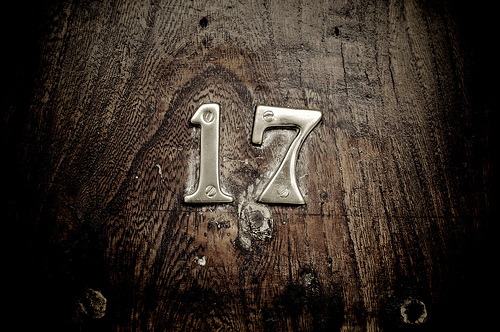

Brackets Sprint 17 Build

Photo from: Michael Randall
Download Sprint 17: http://github.com/adobe/brackets/downloads
The Brackets sweet 17 build is posted and ready for your coding enjoyment. The team at Adobe continued work on some our key features and initiatives. We made progress on Live HTML development and in upgrading our core code editor to CodeMirror 3. We devoted time to working with the community to accept some new features. Finally, we also devoted time to fixing and closing 45+ issues!